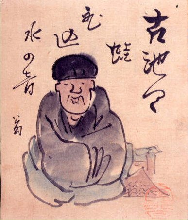

O que é Haiku?
Postado em 20 de março de 2026O Haiku (ou Haicai, em português) é um tipo de poema curto que, para além das linhas da literatura, demonstra uma forma de ver o mundo dentro da cultura japonesa.

O Haiku é um poema extremamente breve, com 17 sílabas (5-7-5), que busca um momento simples e êfemero da vida, geralmente ligado à natureza. Mas, olhando da perspectiva cultural, ele vai muito além de um simples "poema curto". Haiku é uma forma de atenção ao presente, da valorização do silêncio, do vazio e do que não é dito.
História do Haiku
Antes do Haikai existir havia o seu antecessor: Renga, que era um poema escrito coletivamente, por várias pessoas, usando a mesma estrutura silábica do Haikai (5-7-5), podendo chegar a ter dezenas de versos.
O primeiro verso era chamado de Hokku. Ele definia o tom, a estação e o tema do poema, esse sendo considerado o "pai" do Haiku.

Hoje muitos poetas cabam "flexibilizando" o Haiku, quebrando regras como a estrutura 5-7-5, escrevendo para além de atos cotidianos, muitas vezes até tecendo críticas sociais. Mas muitos ainda mantém aquela conexão com o simples e a espiritualidade, criando um equilíbrio entre a estrutura moderna e a estrutura tradicional.